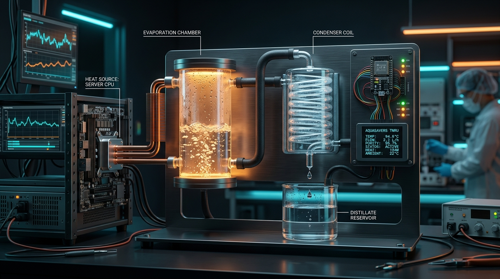

Core Temp
Total Recovered: 38.2 mL
🔄 System Flow Simulation
Interactive 60-FPS animated diagram of the closed-loop membrane distillation recovery cycle.
Step 3: Membrane Distillation Chamber
Salty or dirty feedwater is heated by processor waste energy. Vapor passes through the microporous hydrophobic membrane into the cold condensation chamber.
🇮🇳 National AI Data Center & Water Impact Map
Real verified hyperscale data center hubs across India, thermodynamic heat dissipation, and clean water recovery potential.
🧮 Scalability Impact Calculator
Estimate clean water yields and cooling water savings across edge compute nodes to hyperscale data centers.
💡 How It Works: Compute ➔ Heat ➔ Water
Transforming AI server waste heat into clean, potable water using thermodynamics and hydrophobic membranes.
1. AI Compute creates Heat ($q = mc\Delta T$)
Processors expel thermal energy under heavy inference workloads.
2. Hermetic Liquid Loop Transfers Energy
Closed-loop fluid circulation moves heat directly to the distillation chamber without evaporating cooling water.
3. Vapor Pressure Gradient Drives Flux ($J = C_m\Delta P$)
Pure vapor penetrates the hydrophobic pores while salts and contaminants are 100% rejected.
4. Clean Distillate Condensation
Vapor meets the cold sink and condenses into fresh, usable clean water.
🔌 ESP32 Hardware Wiring & Bridge
Pinouts, sensor configuration, and ready-to-flash Arduino firmware for your physical unit.
The complete ESP32 sketch is ready in your project directory: firmware/esp32_aquasavers.ino. It streams live JSON telemetry over USB Serial (115200 baud) or Wi-Fi.